Modern CSS techniques
by Fatih Demir
Most of my issues with CSS
- Constants
- Vendor prefixes
- CSS hacks
Preprocessors
and others..
Horizontal alignment
Let's position a div inside another div horizontally..
Horizontal alignment
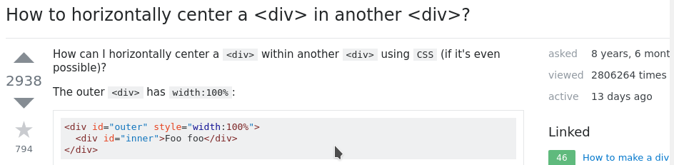Horizontal alignment
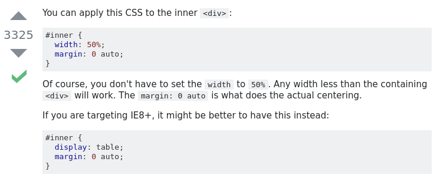Vertical alignment
Let's position a div inside another div vertically..............
Vertical alignment
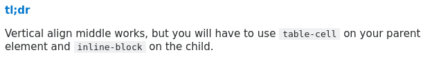Why can't it be easy?

Flexbox
Positioning your elements in modern web apps without pulling your hairs out.
Flexbox
Designed for laying out more complex applications and webpages.
Gives flex containers the ability to manipulate it's contents based on the available space.
Flexbox
Demo horizontal/vertical alignment.
Flex container
/* Flex container as a block element */
display: flex;
/* Flex container as an inline element */
display: inline-flex;
Flex container
One dimensional. Either horizontal or vertical.
Ability to manipulate positioning in both axis.
flex-direction: row; /* default, aligns horizontally.*/Flex container
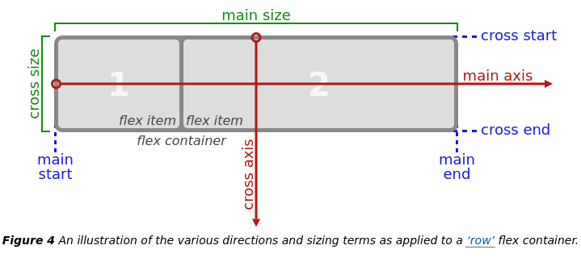Flex container
justify-content: flex-start; /* main axis */align-items: flex-start; /* cross axis */Flex direction
flex-direction: row; /* default */flex-direction: row-reverse; /* also works with column */Flex wrap
flex-wrap: wrap;align-content: stretch;Flex items
Direct children only
Able to nest flex-containers however.
Order
order: 0; /* default */Flex-grow
flex-grow: 0; /* default */Flex-shrink
flex-shrink: 1; /* default */Flex-basis
flex-basis: auto | length; /* default auto */Shorthands
flex: 0 1 auto; /* flex-grow flex-shrink flex-basis */flex-flow: row nowrap; /* flex-direction flex-wrap */Demo
Browser support
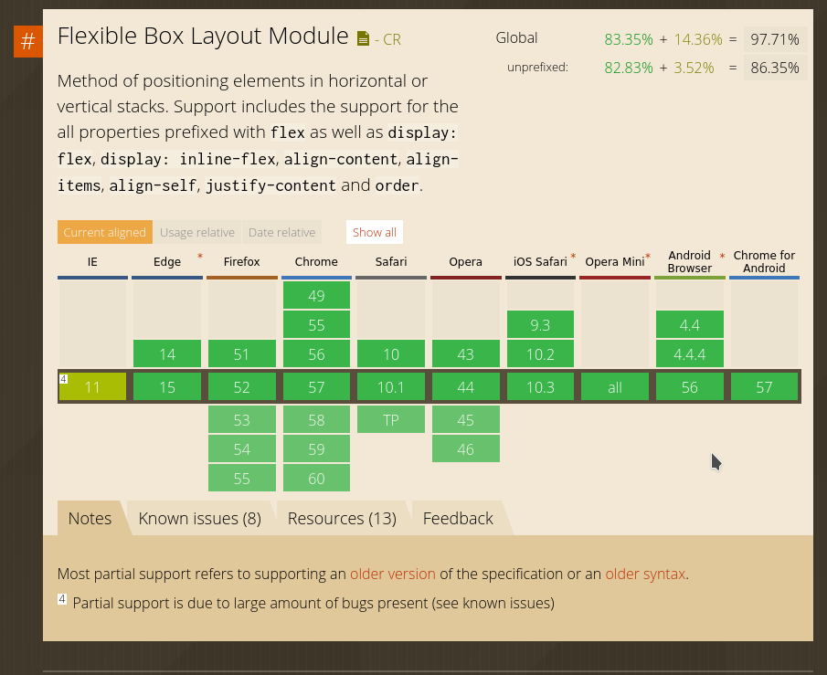Flexbox issues
Excellent resource for flexbox issues and cross-browser workarounds.
Learn more
Questions so far about flexbox?
CSS Grid
CSS Grid
Grid based two-dimensional layout.
Works great in combination with flexbox
There is no Flexbox vs Grid. They are friends!!
Browser support
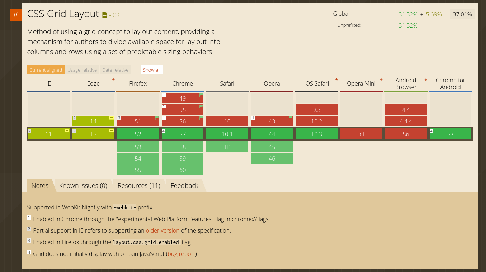Let's get ready for Grid
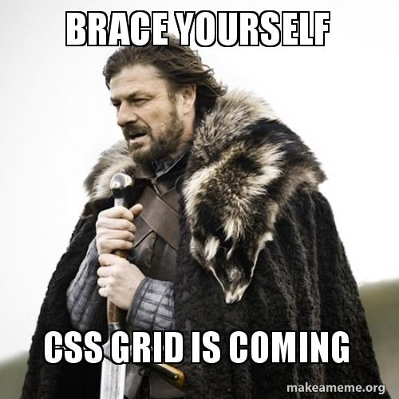Grid line
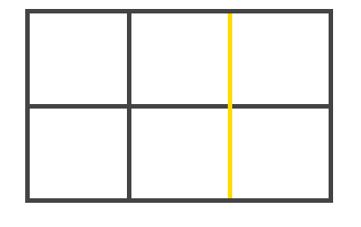Grid cell
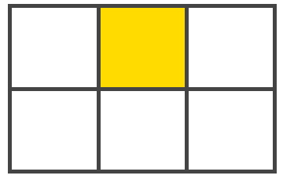Grid track
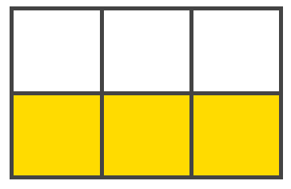Grid area
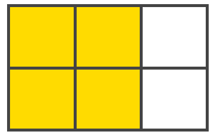Demo
Let's build a simple application with CSS grid together
Grid container
display: grid | inline-grid | subgrid;Grid template rows/columns
grid-template-rows: 10px 10% auto 5% 5px;grid-template-columns: 1fr 1fr; /* repeat(2, 1fr) */grid-template-columns: [col-1-custom-name] 1fr [end-col-1];Grid template areas
.item-a { grid-area: header; }
.item-b { grid-area: main; }
.item-c { grid-area: sidebar; }
.item-d { grid-area: footer; }
.container {
grid-template-columns: 50px 50px 50px 50px;
grid-template-rows: auto;
grid-template-areas:
"header header header header"
"main main . sidebar"
"footer footer footer footer";
}Grid gaps
grid-column-gap: size;grid-row-gap: size;grid-gap: size size; /* 1 size for both or 2 sizes */Aligning
justify-items: stretch; /* start | end | center */align-items: stretch; /* Same as above */justify-content: stretch; /* space-around -between & -evenly */align-content: stretch; /* Same as above */Grid is awesome however
Not production ready..
Learn more
https://css-tricks.com/snippets/css/complete-guide-grid/
https://www.w3.org/TR/css3-grid-layout/
Questions about CSS Grid?
Might need to enable flags in your browser for CSS Grid
Slides on Github
Handson
Pick a website (preferably one you've built yourself before) and create the same layout using CSS grid and flexbox.
Try making it responsive even if the original isn't.
Bonus: no floats, clears, tables & vertical-align.